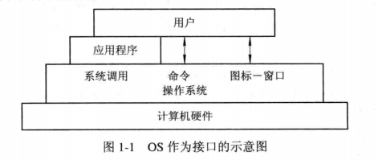
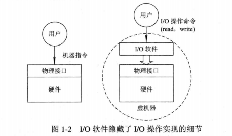
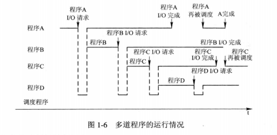
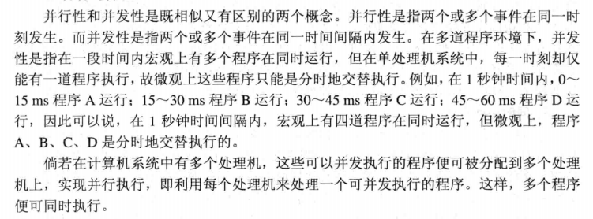
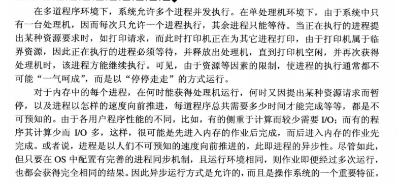

计算机操作系统
操作系统引论
操作系统的目标和作用
操作系统的目标
配置操作系统的主要目的是：方便性、有效性、可扩充性和开放性。
方便性：用户可以使用高级语言翻译成程序代码，通过命令操作计算机系统，使计算机易学易用。
有效性：提高系统资源利用率；提高系统吞吐量
可扩充性：适应计算机硬件，体系结构与计算机应用发展的要求；OS结构发展过程：无结构->模块化结构->层次化结构->微内核结构
开放性：计算机软硬件标准和兼容性问题
操作系统的作用
1.操作系统(OS)作为用户与计算机硬件系统之间的接口：
对计算机用户而言，提供可视化界面等功能，对计算机硬件而言，将高级语言转化为机器语言，编译使用。

2.OS作为计算机系统资源的管理者：
操作系统对四大类资源：处理机、存储器、I/O设备、以及文件(数据和程序)进行管理。
处理机管理：用于分配和控制处理机;
存储器管理：主要负责内存的分配和回收；
I/O设备：负责I/O设备(输入输出设备)的分配(回收)与操作；
文件管理：用于实现对文件的存取、共享和保护。
另外的，计算机操作系统须处理可能发生地：多程序对同一资源的访问
3.OS实现了对计算机资源的抽象：

在物理接口与硬件基础上覆盖I/O设备管理软件，通过软件实现对计算机硬件的使用；但一般的会在上述管理软件的基础上再覆盖一层用于管理文件的软件以实现对文件细节的操作。
操作系统发展的主要动力
1.不断提高的资源利用率
2.方便用户
3.器件的不断更新换代
4.计算机系统结构的发展
5.不断提出的新的应用需求
操作系统的发展过程
未配置操作系统的计算机系统
1人工操作方式：使用已穿孔的纸带，通过专用机器将程序和数据输入计算机。当运行结束后，下一用户上机。
特点：
(1).用户独占全机；
(2).CPU等待人工操作；
(3).计算机资源的利用率低，CPU与I/O设备的速度不匹配
2.脱机输入/输出(Off-Line I/O)方式：该技术事先将装有用户程序和数据的纸带转入纸带输入机，在另一台机器的控制下，把纸带上的数据输入到磁带上。在计算机需要这些程序和数据时再从磁盘上调入内存。
特点：
(1).减少了CPU的空闲时间
(2).提高了I/O设备的速度
单道批处理系统
先将一批作业以脱机方式输入到磁带上，并在系统中配置监督程序，在他的控制下，使作业能逐个连续处理。
缺点：资源无法充分利用：在内存中仅有一道程序，当其发出I/O请求后，CPU处于等待状态，等其I/O完成后才能运行。因I/O设备的低速性，使CPU的使用率下降。
多道批处理系统
在该系统中，用户提交的作业先放在外存上，并排成队列。由作业调度程序按一定算法，从后备队列中调入内存，使他们共享CPU和系统中的各种资源。

优缺点：
1.资源利用率高：能提高内存和I/O设备的利用率
2.系统吞吐量大：CPU和其它资源保持“忙碌”状态；当作业完成时或运行不下去时才进行切换，系统开销小
3.平均周转时间长：文件依次处理，需要时间长
4.无交互能力：除非作业完成，否则用户无法修改提交
须解决的问题：
1.处理机争用问题：提高效率的同时，满足程序运行需求。
2.内存分配和保护问题：为程序分配必要的内存空间，且不会因为某些程序异常影响其它程序。
3.I/O设备分配问题：满足用户对设备使用的同时，提高设备利用率。
4.文件的组织和管理问题：有效的存放程序和数据，方便用户的使用的同时保证程序的安全性
5.作业管理问题：满足个应用程序不同的要求
6.用户与系统的接口问题。
分时系统
1.引入分时系统的用户需求：
(1).人机交互；
(2).共享主机；
2.分时系统实现中的关键问题：
(1).及时接收：为了能逐条处理从终端上输入的数据，须为每个终端配置缓冲区，用于暂存用户键入的命令
(2).及时处理：
1.使作业直接进入内存(作业不能在磁盘上运行)；
2.采用轮转运行方式：在一个极短的时间片内(30ms)。逐个运行程序，使用户能和每个程序交互。
3.分时系统的特征：
(1).多路性：允许多个用户共享主机，提高资源利用率，降低使用费用
(2).独立性：用户操作彼此不干扰，独占主机操作
(3).及时性：用户指令能在短时间内获得响应
(4).交互性：计算机系统能向用户提供多种服务
实时系统
以时间为关键参数，对信号及时或实时反应处理。
1.实时系统的类型：工业控制系统；信息查询系统；多媒体系统；嵌入式系统。
2.实时任务的类型：
(1).周期性实时任务和非周期性实时任务。
(2).硬实时任务和软实时任务。
3.实时系统与分时系统比较：
(1).多路性：分时系统按分时原则为多个终端服务；实时系统按系统周期对多个对象进行控制。
(2).独立性：均互不干扰。
(3).及时性：分时系统依据人所能接受的等待时间确定的；实时控制系统以控制对象要求的截止时间确定。
(4).交互性：均能提供用户数据处理与交互
(5).可靠性：实时系统要求比分时系统更高
微机操作系统的发展
1.单用户单任务操作系统：只允许一个用户使用，允许用户程序作为一个任务运行。
2.单用户多任务操作系统：只允许一个用户使用，但允许把用户程序作为多个任务并发执行。
3.多用户多任务操作系统：允许多个用户通过各自终端使用同一台机器，共享主机系统内的资源；允许把用户程序作为多个任务并发执行
操作系统的基本特性
并发
1.并发与并行；

2.引入进程：多个程序分别建立一个进程，使其并发执行，提高系统吞吐量
共享
资源共享与资源复用，须处理对共享资源的争夺
1.互斥共享方式
对某些资源在同一时间内，只能由一个进程访问，因此要互斥访问。
2.同时访问
典型设备为磁盘设备，可以被多个进程“同时”访问(微观下为短时间内交替访问)。
虚拟
采用“空分复用”或“时分复用”等技术把一条物理信道变为若干条逻辑信道。
1.时分复用技术：
本质为利用某设备为用户服务的空间时间，转去为其他用户服务，使设备充分利用。
(1).虚拟处理机技术。利用多道程序设计技术，为每道程序建立至少一个进程，让多道程序并发执行。让用户感觉到有一个处理机专门为其服务。
(2).虚拟设备技术。将一台物理I/O设备虚拟为多台逻辑上的I/O设备，并允许每个用户占用一台逻辑上的I/O设备。
2.空分复用技术：
本质为利用存储器的空闲空间分区域存放和运行其它程序，提高内存利用率。此技术还需要使用虚拟存储技术。
异步

操作系统的主要功能
操作系统为多道程序的运行提供良好的运行环境，保证程序正常运行，并提高系统中资源的利用率方便用户使用。
处理机管理功能
1.进程控制：
为一个进程创建若干个线程，提高系统的并发性，控制进程在运行过程中的状态转换。
2.进程同步：
设置相应的进程同步机制，以进程互斥(访问临界资源)或进程同步(协调执行次序)的方式访问资源，常使用信号量或互斥锁。
3.进程通信：
实现相互合作进程之间的信息交换
4.调度：
(1).作业调度。从后备队列中按照一定的算法选择出若干个作业，为他们分配运行所需的资源。
(2).进程调度。从进程就绪的队列中按照一定的算法选出一个进程，并分配处理机，使其运行。
计算机语言
1234567891011